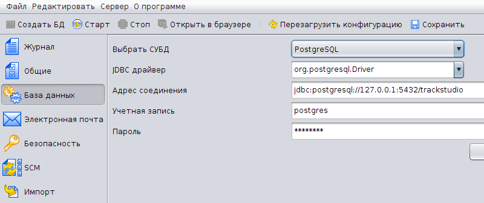
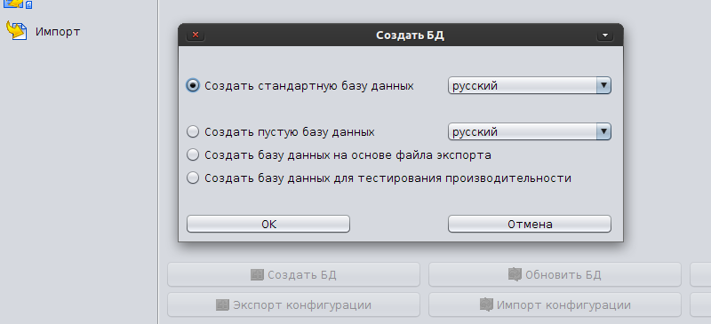

|
<< Click to Display Table of Contents >> Navigation: Rus > Руководство по установке > Создание и настройка базы данных > Создание и инициализация базы данных под PostgreSQL |
1.Запустите postmaster.
> postmaster -D ../data/ -i -h localhost
2.Создайте базу данных:
> createdb -E UNICODE -h localhost -U postgres -W trackstudio
3.Настройте свойства соединения с СУБД:
•TrackStudio SA: На вкладке База данных выберите из списка СУБД PostgreSQL и отредактируйте свойства соединения JDBC

•TrackStudio WAR: Отредактируйте свойства соединения в файле trackstudio.hibernate.properties:
hibernate.dialect org.hibernate.dialect.PostgreSQLDialect
hibernate.connection.url jdbc:postgresql://127.0.0.1:5432/trackstudio
hibernate.connection.driver_class org.postgresql.Driver
hibernate.connection.username postgres
hibernate.connection.password postgres
4.Инициализируйте базу данных:
•TrackStudio SA: На вкладке База данных нажмите кнопку Создать БД

•TrackStudio WAR: Выполните скрипт sql\install\ru\trackstudio-pgsql.sql
> psql -U postgres -W -h localhost -d trackstudio -f trackstudio-pgsql.sql
•Чтобы сделать резервную копию базы данных:
> pg_dump -U postgres -Fc -Z9 trackstudio > trackstudio.dmp
•Чтобы восстановить базу данных:
> createdb -E UNICODE -U postgres trackstudio
> pg_restore -U postgres --disable-triggers -S postgres -d trackstudio trackstudio.dmp